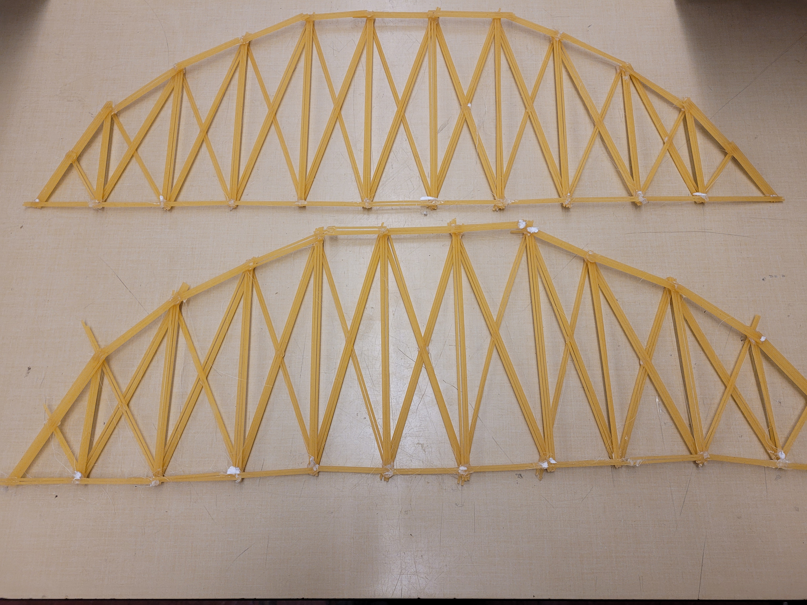
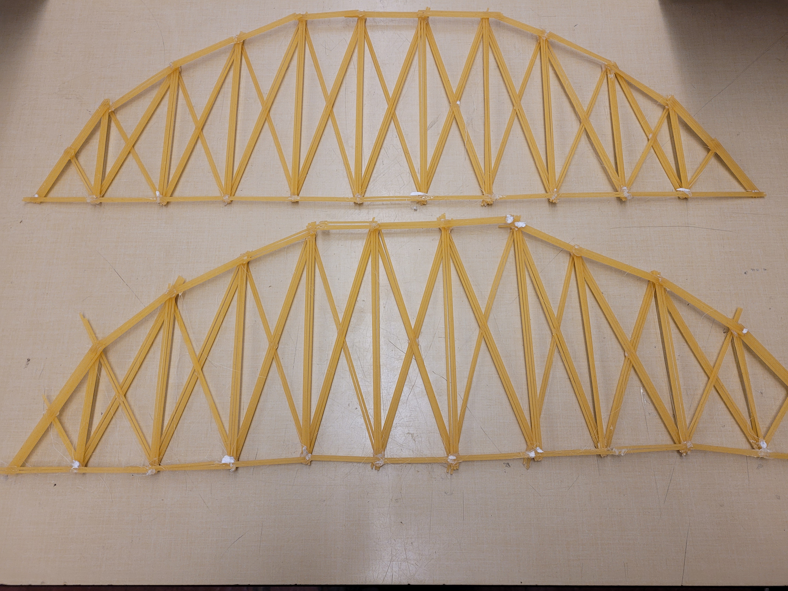
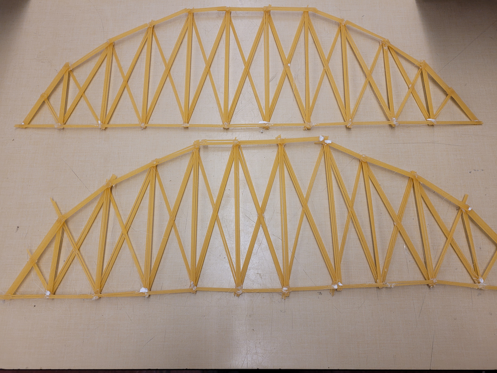
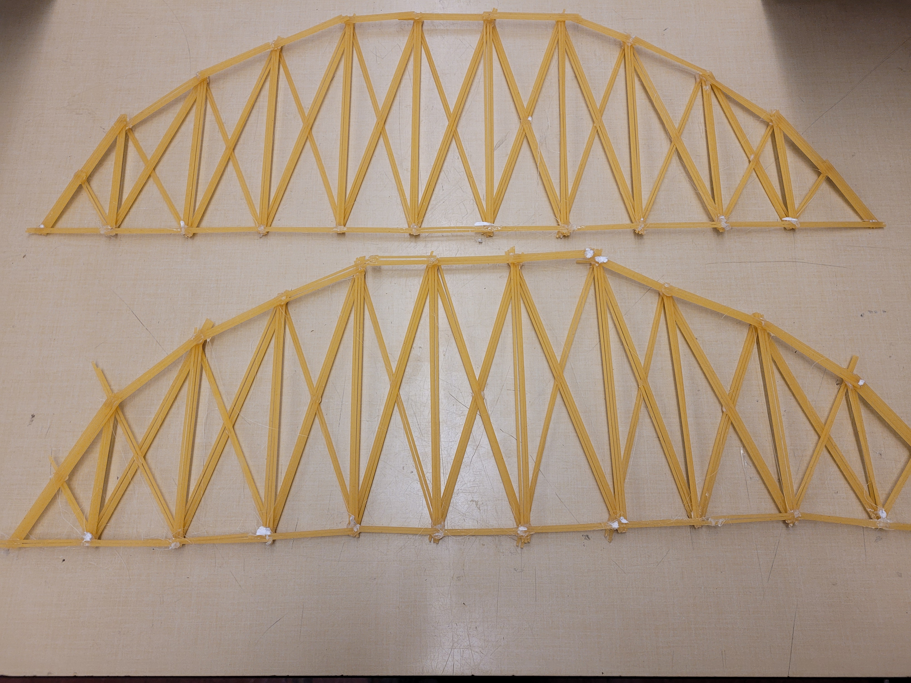

After testing our second bridge a second time, we received a better score and chose to stick with the same basic design. Instead of copying it exactly, we used shorter pieces of spaghetti for each part and paid closer attention to the points under compression and tension. This decision was made because shorter spaghetti does better under compression, and our bridge will weigh less.